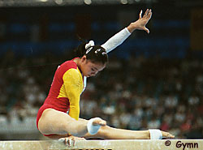

Mo Huilan (CHN)
1995 World B Champion
"Because I'm
little I think the audience likes me."

|
Medal Total
- Olympic Games: 1 Silver
- World Championships: 1
Gold, 2 Silver, 1 Bronze
|
Mo was born on November 7, 1979,
in Guangxi Province and has a twin sister. Mo was the first female to
perform a Gaylord salto on uneven bars.
Competition Results
- 1993
- CHN Cup: 5th AA, 1st UB
Cottbus International: 6th AA
Jr. Pacific Alliance Championships: 1st AA, 1st V, 1st UB, 3rd FX, 6th
B
-
- 1994
- Asian Games: 1st Team, 1st V, 1st UB, 1st B, 1st FX, 3rd AA
China Cup: 4th AA, 1st B, 6th FX
Trophee de Marseille: 18th AA
- World Championships (Brisbane): 7th AA, 7th FX
- World Championships (Dortmund): 4th Team
-
- 1995
- China Cup: 1st AA
- Chunichi Cup: 1st UB, 3rd AA, 3rd V, 7th FX, 8th B
Kawasaki Cup: 1st UB, 4th FX, 5th V, 7th B
- World Championships (Sabae): 1st B, 2nd Team, 2nd
UB, 4th V, 4th FX, 6th AA
-
- 1996
- Chinese Nationals: 1st AA
- Olympic Games: 2nd V, 4th Team, 5th AA,
6th FX
-
- 1997
- BLR-CHN-SUI Tri Meet: 1st Team, 3rd AA
- Thailand International: 2nd UB, 2nd B
Trophee de Marseille: 2nd FX, 5th B, 8th UB
- World Championships (Lausanne): 3rd Team
-
This page was last updated on October 18, 2000.
© Gymn Forum